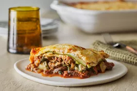

Lasagna Recipe

Lasagna is a delicious Italian dish made by layering pasta, rich meat sauce, creamy ricotta, and melted mozzarella. It's baked until golden and bubbly, making it a comforting, hearty meal.
Vegetarian versions use vegetables like spinach or zucchini instead of meat, but still offer the same satisfying layers of flavor.
Ingredients
- Lasagna noodles
- Ground beef
- Tomato sauce
- Ricotta cheese
- Mozzarella cheese
Steps:
- Preheat oven to 375°F. Cook and drain lasagna noodles.
- Brown ground beef with garlic and onions, then add tomato sauce and simmer.
- Mix ricotta, eggs, and half the mozzarella cheese.
- Layer noodles, sauce, ricotta, and mozzarella in a dish. Bake for 30 minutes.